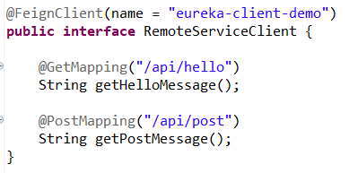
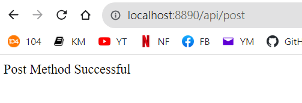
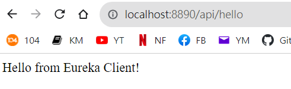
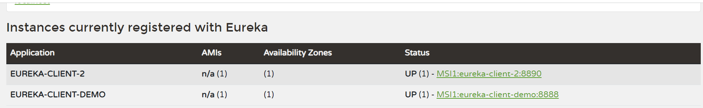

Spring Cloud - OpenFeign Client
Spring Cloud with OpenFiegn Client
情境
-
Eureka Client：建立Controller，並將 /api/** 的 Controller 透過 Spring Security 來保護，這邊使用簡單的 In memory authencate. 所以註冊上去的服務也需要透過 http base 來登入。
-
透過 OpenFiegn 的 Client 呼叫註冊在 Eureka Server 上的服務，也需要將每一請求加上 authorization token。也需要實作 Spring security。
-
雙方的 Spring Security 的 User 來源皆要同源，才有辦法直接登 入。(user/password 作為簡單的帳密認證)
程式碼：
-
FeignClient：https://github.com/aweit-zhu/SpringCloudFeignClient
-
Eureka Client：https://github.com/aweit-zhu/SpringCloudEurekaClient
OpenFiegn
它封裝了呼叫遠端服務的套件，讓您可以透過定義服務接口，免去了實作 @RestTemplete (不用去理會 Http Request 和 Http Response)。

我們可以透過上述代碼，看看 ChatGPT 如何解釋？
Certainly! Let's go through your code step by step:
java
@FeignClient(name = "eureka-client-demo")
public interface RemoteServiceClient {
@GetMapping("/api/hello")
String getHelloMessage();
@PostMapping("/api/post")
String getPostMessage();
}
-
@FeignClient(name = "eureka-client-demo"): This annotation is used to indicate that this interface is a Feign client and specifies the name of the Eureka client that you want to communicate with. In this case, the Eureka client is named "eureka-client-demo". -
@GetMapping("/api/hello"): This annotation is used to map thegetHelloMessage()method to the HTTP GET request with the endpoint path "/api/hello". It indicates that this method will be used to retrieve a hello message from the specified endpoint. -
String getHelloMessage(): This method signature defines the contract for the Feign client. It specifies that the method will return a String, which represents the hello message retrieved from the endpoint. -
@PostMapping("/api/post"): This annotation is used to map thegetPostMessage()method to the HTTP POST request with the endpoint path "/api/post". It indicates that this method will be used to send a post message to the specified endpoint. -
String getPostMessage(): This method signature defines the contract for the Feign client. It specifies that the method will return a String, which represents the response message received from the endpoint after sending the post request.
Overall, this code defines a Feign client interface RemoteServiceClient that communicates with the "eureka-client-demo" Eureka client. It provides two methods, getHelloMessage() and getPostMessage(), which correspond to GET and POST requests, respectively, and are mapped to specific endpoint paths ("/api/hello" and "/api/post").
OpenFiegn with spring security
- pom.xml
<dependencies>
<!-- Spring Cloud OpenFeign -->
<dependency>
<groupId>org.springframework.cloud</groupId>
<artifactId>spring-cloud-starter-openfeign</artifactId>
</dependency>
<!-- Spring Cloud Starter Netflix Eureka Client (if using service
discovery) -->
<dependency>
<groupId>org.springframework.cloud</groupId>
<artifactId>spring-cloud-starter-netflix-eureka-client</artifactId>
</dependency>
<!-- Spring Boot Starter Web -->
<dependency>
<groupId>org.springframework.boot</groupId>
<artifactId>spring-boot-starter-web</artifactId>
</dependency>
<!-- Spring Boot DevTools (optional) -->
<dependency>
<groupId>org.springframework.boot</groupId>
<artifactId>spring-boot-devtools</artifactId>
<scope>runtime</scope>
<optional>true</optional>
</dependency>
<dependency>
<groupId>org.springframework.boot</groupId>
<artifactId>spring-boot-starter-security</artifactId>
</dependency>
<dependency>
<groupId>org.projectlombok</groupId>
<artifactId>lombok</artifactId>
<optional>true</optional>
</dependency>
<dependency>
<groupId>org.springframework.boot</groupId>
<artifactId>spring-boot-starter-test</artifactId>
<scope>test</scope>
</dependency>
</dependencies>
- Application：@EnableDiscoveryClient、@EnableFeignClients
@SpringBootApplication
@EnableDiscoveryClient
@EnableFeignClients
public class SpringCloudFeignClientApplication {
public static void main(String[] args) {
SpringApplication.run(SpringCloudFeignClientApplication.class, args);
}
}
- Feign Service
@FeignClient(name = "eureka-client-demo")
public interface RemoteServiceClient {
@GetMapping("/api/hello")
String getHelloMessage();
@PostMapping("/api/post")
String getPostMessage();
}
- Controller
@RestController
public class HelloController {
@Autowired
RemoteServiceClient remoteServiceClient;
@GetMapping("/api/hello")
public String getHelloMessageFromRemoteService() {
return remoteServiceClient.getHelloMessage();
}
@GetMapping("/api/post")
public String getPostMessageFromRemoteService() {
return remoteServiceClient.getPostMessage();
}
}
- Security Config
@Configuration
@EnableWebSecurity
public class SecurityConfig extends WebSecurityConfigurerAdapter {
@Bean
public PasswordEncoder passwordEncoder() {
return new BCryptPasswordEncoder();
}
@Override
public void configure(AuthenticationManagerBuilder auth) throws Exception {
auth.inMemoryAuthentication()
.withUser("user")
.password(passwordEncoder().encode("password"))
.roles("USER");
}
@Override
protected void configure(HttpSecurity http) throws Exception {
http.authorizeRequests()
.antMatchers("/api/**").authenticated()
.anyRequest().permitAll()
.and()
.httpBasic()
.and()
.csrf().disable();
}
}
- Interceptor
FeignConfiguration
@Configuration
public class FeignConfiguration {
@Bean
public FeignClientInterceptor feignClientInterceptor() {
return new FeignClientInterceptor();
}
}
FeignClientInterceptor
public class FeignClientInterceptor implements RequestInterceptor {
@Autowired
private HttpServletRequest request;
@Override
public void apply(RequestTemplate requestTemplate) {
String reqAuthInput= request.getHeader("authorization");
if (reqAuthInput!= null) {
requestTemplate.header("authorization",reqAuthInput);
}
}
}
- application.properties
server.port=8890
spring.application.name=eureka-client-2
eureka.client.service-url.defaultZone=http://localhost:8761/eureka
Eureka Client with spring security
- pom.xml
<!-- Spring Security -->
<dependency>
<groupId>org.springframework.boot</groupId>
<artifactId>spring-boot-starter-security</artifactId>
</dependency>
- Security Config
@Configuration
@EnableWebSecurity
public class SecurityConfig extends WebSecurityConfigurerAdapter {
@Bean
public PasswordEncoder passwordEncoder() {
return new BCryptPasswordEncoder();
}
@Override
public void configure(AuthenticationManagerBuilder auth) throws Exception {
auth.inMemoryAuthentication()
.withUser("user")
.password(passwordEncoder().encode("password"))
.roles("USER");
}
@Override
protected void configure(HttpSecurity http) throws Exception {
http.authorizeRequests()
.antMatchers("/api/**").authenticated()
.anyRequest().permitAll()
.and()
.httpBasic()
.and()
.csrf().disable();
}
}
- Controller
@RestController
public class HelloController {
@GetMapping("/api/hello")
public String hello() {
return "Hello from Eureka Client!";
}
@PostMapping("/api/post")
public String post() {
return "Post Method Successful";
}
}
Test
-
Feign Client Web API (POST)：http://localhost:8890/api/post 
-
Feign Client Web API (GET)：http://localhost:8890/api/hello 
-
Eureka Server：http://localhost:8761/ 可以看到 兩個服務被註冊。
